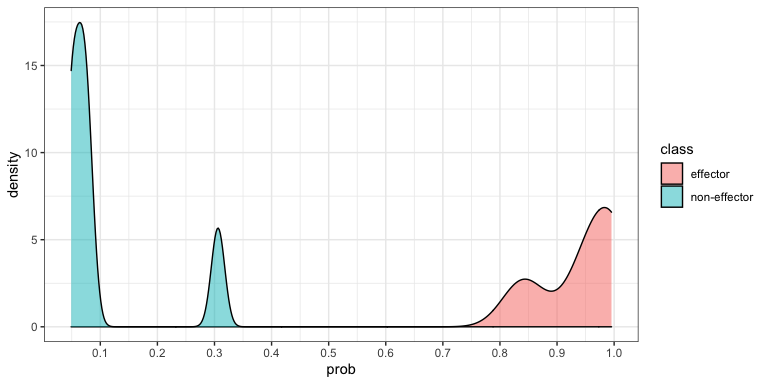

deepredeff is a package to predict effector protein given amino acid sequences. This tool can be used to predict effectors from three different taxa, which are oomycete, fungi, and bacteria.
Installation
First, install the deepredeff package from GitHub as follows:
# install.packages("devtools") devtools::install_github("ruthkr/deepredeff")
The deepredeff package uses TensorFlow. If you already have TensorFlow 2.0.0 or later in your system, then you can specify the environment where TensorFlow is installed using reticulate::use_condaenv(). Otherwise, you can install TensorFlow, by using the install_tensorflow() function as follows:
Note that this only needs to be run once, the first time you use deepredeff.
Quick start
This is a basic example which shows you how to predict effector sequences if you have a FASTA file:
# Load the package library(deepredeff) # Define the fasta path from the sample data bacteria_fasta_path <- system.file( "extdata/example", "bacteria_sample.fasta", package = "deepredeff" ) # Predict the effector candidate using bacteria model pred_result <- predict_effector( input = bacteria_fasta_path, taxon = "bacteria" ) #> Loaded models successfully! #> Model used for taxon bacteria: ensemble_weighted.
# View results pred_result
| name | sequence | s_score | prediction |
|---|---|---|---|
| tr⎮A0A0N8SZV2⎮A0A0N8SZV2_PSESY Type III secretion system effector HopAI1 OS=Pseudomonas syringae pv. syringae OX=321 GN=ALO45_04155 PE=4 SV=1 | MPINRPAFNLKLNTAIAQPTLKKDA | 0.9483424 | effector |
| tr⎮A5CLR7⎮A5CLR7_CLAM3 Pat-1 protein OS=Clavibacter michiganensis subsp. michiganensis (strain NCPPB 382) OX=443906 GN=pat-1 PE=4 SV=1 | MQFMSRINRILFVAVVSLLSVLGCC | 0.0798177 | non-effector |
| sp⎮B2SU53⎮PTHX1_XANOP TAL effector protein PthXo1 OS=Xanthomonas oryzae pv. oryzae (strain PXO99A) OX=360094 GN=pthXo1 PE=1 SV=2 | MDPIRSRTPSPARELLPGPQPDRVQ | 0.9943361 | effector |
| tr⎮C0SPN9⎮C0SPN9_RALSL Uncharacterized protein RSc2139 OS=Ralstonia solanacearum OX=305 GN=RSc2139 PE=4 SV=1 | MSIGRSKSVAGASASHALASGENGS | 0.8418443 | effector |
| tr⎮D2Z000⎮D2Z000_RALSL Type III effector protein OS=Ralstonia solanacearum OX=305 GN=rip61 PE=4 SV=1 | MPPPIRNARTTPPSFDPSAAGDDLR | 0.9953785 | effector |
| tr⎮Q8XX20⎮Q8XX20_RALSO Putative multicopper oxidase, type 3 signal peptide protein OS=Ralstonia solanacearum (strain GMI1000) OX=267608 GN=RSc2298 PE=4 SV=1 | MSHMTFNTWKAGLWRLAAAAVLSLL | 0.0645516 | non-effector |
| tr⎮Q87UH8⎮Q87UH8_PSESM Taurine ABC transporter, periplasmic taurine-binding protein OS=Pseudomonas syringae pv. tomato (strain ATCC BAA-871 / DC3000) OX=223283 GN=tauA PE=4 SV=1 | MKLHFSLRLLTALSLTGATFLAQAA | 0.0492858 | non-effector |
| tr⎮Q4ZTI0⎮Q4ZTI0_PSEU2 Amino acid ABC transporter substrate-binding protein, PAAT family OS=Pseudomonas syringae pv. syringae (strain B728a) OX=205918 GN=Psyr_2503 PE=4 SV=1 | MHRGPSFVKACAFVLSASFMLANTV | 0.3061618 | non-effector |
| tr⎮Q4ZR15⎮Q4ZR15_PSEU2 Sensor protein OS=Pseudomonas syringae pv. syringae (strain B728a) OX=205918 GN=Psyr_3375 PE=4 SV=1 | MRRQPSLTLRSTLAFALVAMLTVSG | 0.0722144 | non-effector |
| tr⎮D4I1R4⎮D4I1R4_ERWAC Outer-membrane lipoprotein LolB OS=Erwinia amylovora (strain CFBP1430) OX=665029 GN=lolB PE=3 SV=1 | MLSSNRRLLRLLPLASLLLTACGLH | 0.0489914 | non-effector |
After getting the prediction results, you can plot the probability distribution of the results as follows:
plot(pred_result)

More examples with different input formats are available on functions documentations and vignettes, please refer to the documentation.